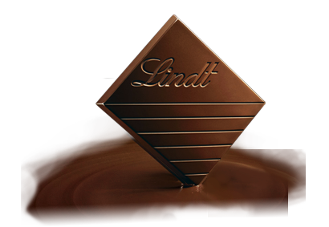

Lindt
Ova je tvrtka jedna od najpoznatijih svjetskih proizvođača, te ujedno i jedna od prvih koja je započela ovu tradiciju. Prema službenim izvorima povijesti ove tvrtke sve je krenulo 1845.godine.
Te godine, u jednoj maloj slastičarnici u gradu Zürich-u, slastičar David Sprüngli-Schwarz i njegov sin Rudolf Sprüngli-Ammann, koji se izučavao za slastičara, upustili su se u nešto potpuno novo, izrada čokolade. Također htjeli su da bude u skladu sa tadašnjom talijanskom modom, što znači čvrste table čokolade, a ne kao piće.
1959.godine otvorili su veću slastičarnicu u istom gradu ali drugoj ulici, a nakon smrti oca Rudolf je nastavio sa širenjem, te je 80-ih godina 19.stoljeća imao oko 80 zaposlenih i opskrbljavao čokoladama i pralinama mnoge europske zemlje, pa čak i Indiju.
Nakon što je Rudolf, godine 1892. prepustio svojim sinovima, njegov mlađi sin David Robert i njegov nasljednik su učinili obiteljski posao svjetski poznatim i priznatim.
Stariji sin Johann Rudolf Sprüngli-Schifferli je naslijedio tvornicu koju je ambiciozno renovirao i modernizirao.
Ali kako mu ta lokacija nije dopuštala daljnje širenje postrojenja, Johann je sagradio potpuno novo postrojenje u Kilchbergu, na lijevoj obali jezera Zürich, koje je s radom započelo 1899.godine i tamo ostalo do današnjih dana. Također je tvrtku pretvorio u d.d.o. pod imenom Chocolat Sprüngli AG.
Iste je godine Johannova tvrtka kupila tvornicu čokolade smještenu u Bern-u, uključujići i ekskluzivno pravo na tajne proizvodnje i poznatu marku Rodolphe Lindt-a, čija je metoda proizvodnje čokolade uvelike doprinjela reputaciji švicarske čokolade.
Tvrtka je kasnije preimenovana u Chocoladefabriken Lindt & Sprüngli AG vođena partnerima Lindt i Sprüngli, te uz mnogo poteškoća ali i ustrajnosti, te krajnjeg uspjeha, dostigla svjetsku slavu i reputaciju koju danas ima.
Lindt svoje proizvode nudi unutar nekoliko linija poput Classic, Creation, Excellence, Lindor i mnoge druge.
Detaljnije informacije mogu se naći na web-stranici Lindt-a.